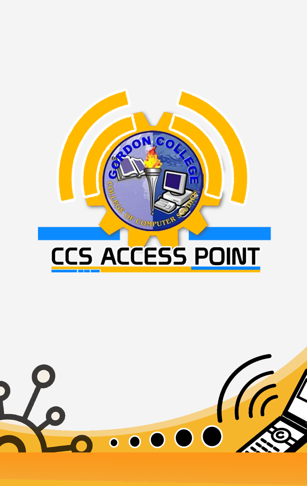

Gordon College, also known as Dalubhasaang Gordon in Filipino, is a local government-funded college in Olongapo City, Philippines. It was founded on February 24, 1999 by virtue of City Ordinance No. 9, and is composed of four constituent colleges: College of Computer Studies, College of Business and Accountancy, College of Education, and College of Nursing. Other academic units include the School of Midwifery, Department of Vocational Technology, Faculty of Arts and Sciences, Center for Research and Development, and Institute of Graduate Studies. As of now, Gordon College - College of Computer Studies is an active member and pioneer school in Asia Pacific to roll-out BlackBerry Academic Program. GC-CCS is also academic partner of IBM DB2.GC-CCS program (BSIT,BSCS,ACT) is currently accredited Level 1.
Undergraduate Courses
-Bachelor of Science in Nursing
-Bachelor of Elementary Education
-Bachelor of Secondary Education
-Bachelor of Science in Accountancy (5 years)
-Bachelor of Science in Accounting Technology (4 years)
-Bachelor of Science in Customs Administration
-Bachelor of Science in Business Administration (formerly Business Management)
-Associate in Hotel and Restaurant Management (2 years)
-Bachelor of Science in Computer Science
-Bachelor of Science in Information Technology
-Associate in Computer Technology (2 years)
-Graduate of Midwifery
Version 1.0
CCS Access Point (CAP) is a cross platform mobile student portal created for Gordon College - College of Computer Studies. It was created to provide communication medium that is beneficial among the Faculty Members, Parents and especially the Students and to promote innovation for the college by providing convenient way of viewing their grades and portable reference of college information.
This application is created using HTML5, Javascript and CSS and available on BlackBerry World for z10 and q10 and Google Play for Android phones.
Scan this to download